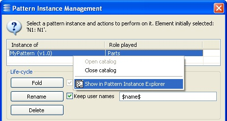

From the instance management panel
Select an instance in the table of the Instance Management Panel and right-click it to display the 'Show in Pattern Instance Explorer' menu item. The Pattern Instance Explorer will focus on the instance.
